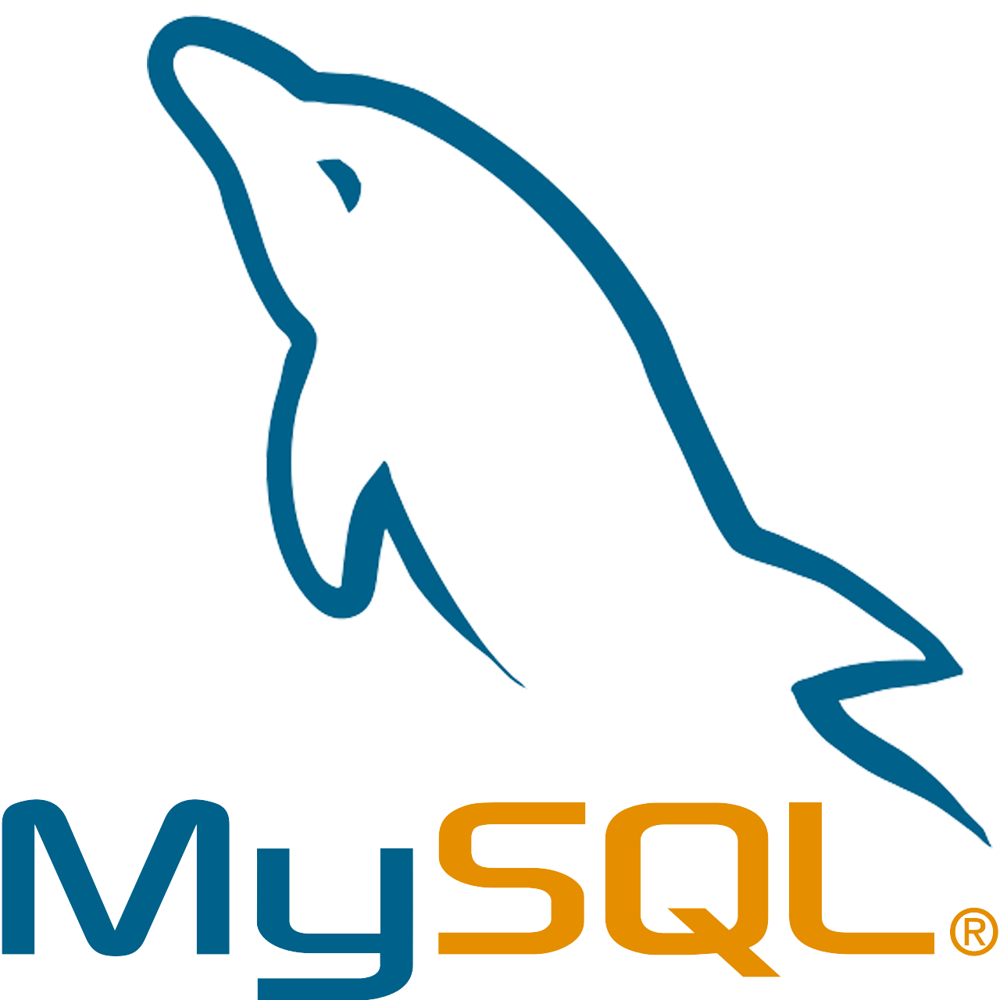
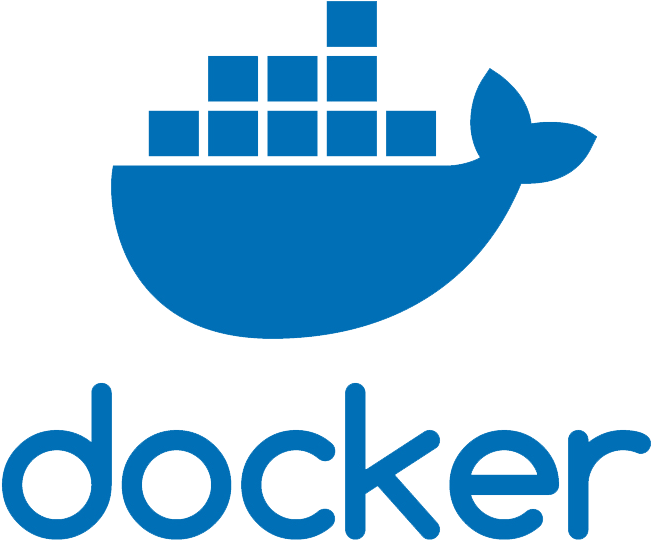
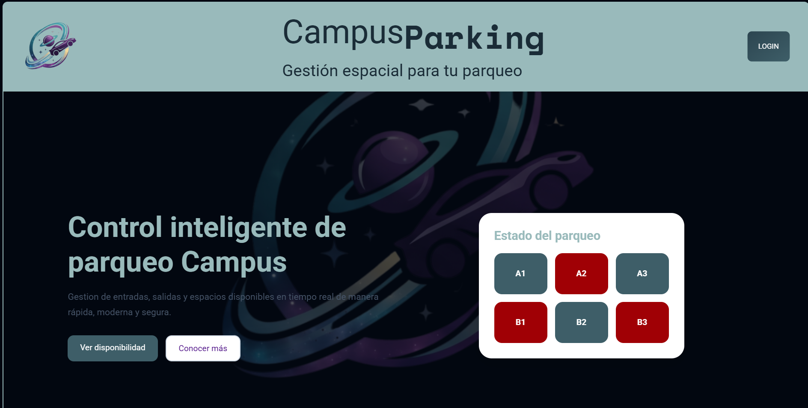
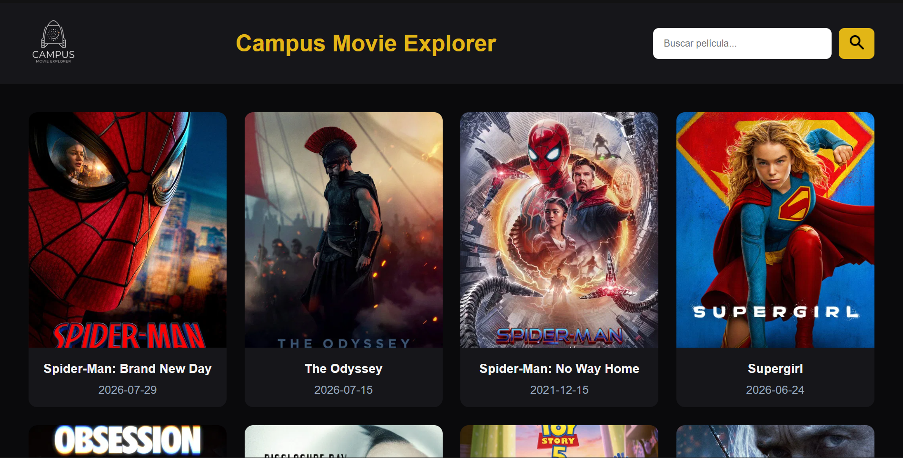

HTML
Estructuras web semánticas y accesibles.
Hola, soy
|
Desarrollo sitios y aplicaciones web funcionales, claros y bien cuidados, desde la idea hasta el resultado final.


Soy desarrollador web enfocado en crear experiencias digitales que no solo funcionen bien, sino que también se vean bien. Trabajo con Python, HTML, CSS y JavaScript, combinando lógica y creatividad en cada proyecto.
Fuera del código, me apasionan la música, la fotografía y el fútbol, cosas que influyen bastante en mi forma de pensar y crear. Me gusta aprender constantemente, experimentar y mejorar en cada proyecto que realizo.
Disfruto involucrarme en todo el proceso de desarrollo, buscando que cada sitio tenga calidad, estilo y una buena experiencia para quien lo usa.
Estructuras web semánticas y accesibles.

Sitios atractivos y responsivos.

Interactividad y funcionalidad en la web.

Desarrollo web con Django o Flask.

Control de versiones y buenas prácticas.

Gestión de bases de datos relacionales.
Automatizaciones con nodos y flujos.

Contenedores y levantado de servicios (nivel básico).

Sistema web de gestión y control de parqueo: administración de vehículos, control dinámico de espacios y cálculo automático de cobros en tiempo real.

Aplicación interactiva para explorar películas populares, buscar por nombre, navegar por categorías y ver el detalle de cada una en un modal dinámico.

Presenta line-up, horarios, ubicación y venta de entradas de forma clara y atractiva, con una experiencia de usuario fluida.

Portafolio para mostrar habilidades, proyectos y logros, con diseño responsivo para dispositivos móviles y de escritorio.
¿Tienes un proyecto o una oportunidad en mente? Escríbeme y conversemos.
El CV aún no está disponible. Vuelve pronto.
 LinkedIn
LinkedIn Instagram
Instagram WhatsApp
WhatsApp